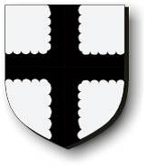

1502208 Sir William Sinclair
Blev högst 47 år.

Far:
Mor:
Född:
1283 Rosslyn Castle, Edinburgh, Scotland. [1]
Död:
1330 Teba, Malaga, Spain. [1]
Barn med ?
Barn:
Personhistoria
1283
Födelse 1283 Rosslyn Castle, Edinburgh, Scotland
[1]
1330
Död 1330 Teba, Malaga, Spain
[1]
Källor